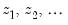
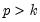
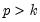

Once we estimate  from Equation (21.4)
from Equation (21.4), we can recover the parameters of interest

, and their standard errors using the relationship described in
Equation (21.2). This procedure is straightforward since

is a linear transformation of

.
You specify a polynomial distributed lag by the pdl term, with the following information in parentheses, each separated by a comma in this order:
You may omit the constraint code if you do not want to constrain the lag polynomial. Any number of pdl terms may be included in an equation. Each one tells EViews to fit distributed lag coefficients to the series and to constrain the coefficients to lie on a polynomial.
The pdl specification may also be used in two-stage least squares. If the series in the
pdl is exogenous, you should include the PDL of the series in the instruments as well. For this purpose, you may specify
pdl(*) as an instrument; all
pdl variables will be used as instruments. For example, if you specify the TSLS equation as,
Taken individually, none of the coefficients on lagged M1 are statistically different from zero. Yet the regression as a whole has a reasonable  with a very significant F
with a very significant F-statistic (though with a very low Durbin-Watson statistic). This is a typical symptom of high collinearity among the regressors and suggests fitting a polynomial distributed lag model.
The reported at the bottom of the table is the sum of the estimated coefficients on the distributed lag and has the interpretation of the long run effect of M1 on IP, assuming stationarity.
Note that selecting for an equation estimated with PDL terms tests the restrictions on

, not on

. In this example, the coefficients on the fourth- (PDL05) and fifth-order (PDL06) terms are individually insignificant and very close to zero. To test the joint significance of these two terms, click and enter:
in the Wald Test dialog box (see “Wald Test (Coefficient Restrictions)” for an extensive discussion of Wald tests in EViews). EViews displays the result of the joint test:
When used in an equation specification, @expand creates a set of dummy variables that span the unique integer or string values of the input series.
Similarly, the @expand statement in the equation list specification,
The option @dropfirst specifies that the first category should be dropped so that:
Similarly, @droplast specifies that the last category should be dropped. In:
You may specify the dummy variables to be dropped, explicitly, using the syntax @drop(val1[, val2, val3,...]), where each argument specified corresponds to a successive category in
@expand. For example, in the expression:
We caution you to take some care in using @expand since it is very easy to generate excessively large numbers of regressors.
@expand may also be used as part of a general mathematical expression, for example, in interactions with another variable as in:
We deliberately omit the constant term C since the @expand creates a full set of dummy variables. The top portion of the results is depicted below:


of the polynomial in Equation (21.2). The terms PDL01, PDL02, PDL03, …, correspond to  in Equation (21.4).
The Sum of Lags reported at the bottom of the table is the sum of the estimated coefficients on the distributed lag and has the interpretation of the long run effect of M1 on IP, assuming stationarity.Note that selecting View/Coefficient Diagnostics for an equation estimated with PDL terms tests the restrictions on describe the lag in the effect of
describe the lag in the effect of  on
on  . In many cases, the coefficients can be estimated directly using this specification. In other cases, the high collinearity of current and lagged values of
. In many cases, the coefficients can be estimated directly using this specification. In other cases, the high collinearity of current and lagged values of  will defeat direct estimation.
will defeat direct estimation.  restricts the
restricts the  coefficients to lie on a
coefficients to lie on a  -th order polynomial of the form,
-th order polynomial of the form, .
.  lags of
lags of  using only
using only  parameters (if you choose , EViews will return a “Near Singular Matrix” error).
parameters (if you choose , EViews will return a “Near Singular Matrix” error).  , the degree of the polynomial (the highest power in the polynomial)
, the degree of the polynomial (the highest power in the polynomial)  , and the constraints that you want to apply. A near end constraint restricts the one-period lead effect of
, and the constraints that you want to apply. A near end constraint restricts the one-period lead effect of  on
on  to be zero:
to be zero: on
on  to die off beyond the number of specified lags:
to die off beyond the number of specified lags: parameters estimated is reduced by one to account for the restriction; if you restrict both the near and far end of the lag, the number of
parameters estimated is reduced by one to account for the restriction; if you restrict both the near and far end of the lag, the number of  parameters is reduced by two.
parameters is reduced by two.  in equation (1) are reported at the bottom of the table, together with a plot of the estimated polynomial:
in equation (1) are reported at the bottom of the table, together with a plot of the estimated polynomial: